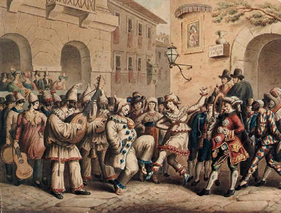

Origem
O Carnaval começou a ser comemorado há muitos anos, em especial na região Sul da Europa, entre membros do Catolicismo, como festa pagã, ou seja, que contrariava os preceitos propagados pela religião.
Estudos indicam que a palavra Carnaval tem como origem os termos latinos carne levare ou “para retirar a carne”. Esse significado tem relação com o período de Quaresma, no qual os católicos abrem mão de algumas comidas e bebidas e de parte de prazeres tidos como mundanos.
Desse modo, segundo pesquisas, um dia antes da Quarta-feira de Cinzas, alguns católicos realizavam festas e aproveitavam para comer bastante carne, pois sabiam que, a partir do dia seguinte, não poderiam degustá-la até o final do período de Quaresma.
Conforme a história do Carnaval, essa celebração pode estar relacionada a algumas festas de origem greco-romana dedicadas ao deus do vinho, Baco (ou Dionísio, para os gregos). Nos eventos, as pessoas costumavam embriagar-se, comer muito e entregar-se aos prazeres da carne.
